Índice
À semelhança de outros sistemas operativos móveis ou para computador, o Xubuntu vem com uma aparência por defeito que alguns utilizadores poderão querer personalizar de acordo com as suas necessidades. Ao contrário do Windows, do Mac OS e de alguns ambientes gráficos Linux, o Xubuntu vem pré-instalado com muitas ferramentas de personalização que oferecem muito controlo aos utilizadores.
As definições de personalização do Xubuntu podem ser acedidas a partir da categoriaPessoal do  , da categoria Definições do
, da categoria Definições do  (Ctrl + Esc), doLocalizador de aplicações (Alt + F3), ou do menu do clique direito de um objeto.
(Ctrl + Esc), doLocalizador de aplicações (Alt + F3), ou do menu do clique direito de um objeto.
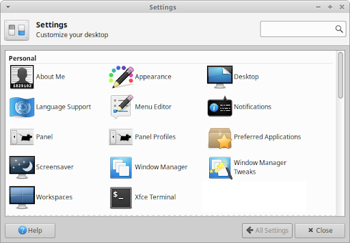
O esquema de painel por defeito do Xubuntu consiste num painel simples na parte superior do ecrã com o menu, a lista de janelas e a área de notificações. Este esquema de painel pode ser trocado por um painel agrupado ou pode ser personalizado manualmente.
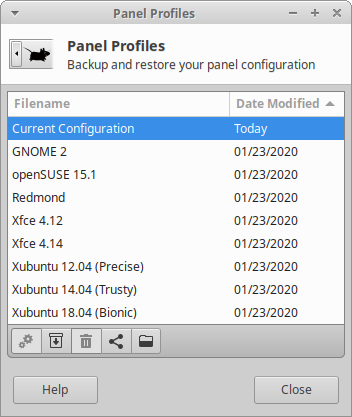
As definições das Preferências do painel facilita-lhe a troca para um dos esquemas de painéis agrupados ou aplicar um esquema de painel importado. Também facilita a gravação e exportação do seu esquema atual de painel.
- Este esquema é inspirado no esquema de painel por defeito do ambiente gráfico GNOME 2, o qual possui um painel superior e outro inferior. O painel superior possui um menu clássico em árvore, menus de contexto, lançadores de definições e de navegadores e área de notificações, enquanto o painel inferior possui o botão de mostrar o ambiente de trabalho, a lista de janelas e o alternador de áreas de trabalho.
- Este é o esquema por defeito encontrado na edição Xfce do openSUSE, que possui um único painel na parte inferior do ecrã com um menu de pesquisa moderno, o botão para mostrar o ambiente de trabalho, a lista de janelas, o alternador de áreas de trabalho e a área de notificações.
- Este esquema é inspirado no Microsoft Windows XP, com um único painel na parte inferior do ecrã, o qual possui um menu clássico, a lista de janelas e a área de notificações.
- Este é o esquema por defeito do Xfce 4.12 que contém um painel superior e outro inferior. O painel superior possui um menu clássico, a lista de janelas, o alternador de áreas de trabalho e a área de notificações, enquanto painel inferior central possui o botão para mostrar o ambiente de trabalho, o botão dos diretórios do utilizador e vários lançadores para aplicações.
- Este é o esquema por defeito do Xfce 4.14 e é semelhante ao esquema de painel do Xfce 4.12, com a exceção de possuir um painel superior mais pequeno com indicadores de áudio, bateria e notificações adicionais.
- Este era o esquema de painel por defeito usado na LTS 2012 do Xubuntu e é semelhante ao esquema de painel doXfce 4.12, mas possui um painel que se esconde automaticamente na parte inferior do ecrã.
- Este era o esquema por defeito usado na LTS 2014 do Xubuntu e possui um único painel superior com um menu de pesquisa moderno, a lista de janelas e a área de notificações.
- Este era o esquema por defeito usado na LTS 2018 do Xubuntu e é semelhante ao esquema de painel doXubuntu 14.04 (Trusty) com indicadores adicionais de áudio e notificações.
Para efetuar pequenas alterações ao(s) painel(éis) do Xubuntu, pode fazer o seguinte:
Arrastar o lançador de uma aplicação do  , do Ambiente de trabalho ou do Localizador de aplicações para o painel para o adicionar ao painel.
, do Ambiente de trabalho ou do Localizador de aplicações para o painel para o adicionar ao painel.
Efetuar clique com o botão direito do rato sobre o lançador de uma aplicação do  e selecionar a entradaAdicionar ao painel no menu de contexto para o adicionar ao painel.
e selecionar a entradaAdicionar ao painel no menu de contexto para o adicionar ao painel.
Clicar com o botão direito do rato em qualquer item do painel e selecionar as entradas Propriedades, Mover, ou Remover do menu de contexto para o personalizar, mover para a posição desejada ou remover do painel.
Clicar com o botão direito do rato em qualquer item do painel e selecionar Painel -> Adicionar novos itens... para adicionar um novo item ao painel.
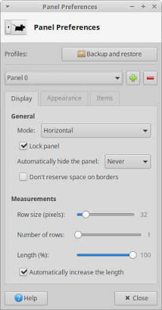
Para outras alterações ao(s) painel(éis), terá necessidade de abrir as definições do Painel, a qual também é acessível a partir do clique com o botão direito do rato sobre qualquer item do painel e da seleção Painel -> Preferências do painel.... A área superior da janela da-lhe acesso às definições das Preferências do painel e a possibilidade de selecionar, adicionar e remover painéis. As restantes definições encontram-se distribuídas por três separadores.
- Neste separador, pode definir a altura e a largura do painel, a orientação vertical ou horizontal, a posição no ecrã e o comportamento de ocultação. Para mover o painel, precisa de desativar a opçãoBloquear painel e arrasta-lo por um dos dois ganchos que aparecem nas pontas.
- Neste separador é possível definir a transparência do painel, o tamanho dos ícones e se o seu fundo é uma cor ou uma imagem.
- Este separador permite-lhe adicionar, organizar e remover suplementos, bem como aceder às propriedades dos suplementos através d barra do botão. Também é possível reorganizar os itens se os arrastar com o rato e aceder às suas propriedades com duplo clique.
É possível instalar suplementos adicionais do painel, também conhecidos como applets do painel. Os suplementos do painel não listados na janela Adicionar novos itens precisam de ser instalados antes de poderem ser utilizados. Alguns dos suplementos encontram-se listados aqui e os mais populares/úteis dizem respeito à gestão da área de transferência ( xfce4-clipman-plugin
xfce4-clipman-plugin xfce4-appmenu-plugin
xfce4-appmenu-plugin
Os utilizadores que pretendam uma dock semelhante à do Mac OS ou elementary OS podem escolher uma das seguintes- Plank ( plank
plank
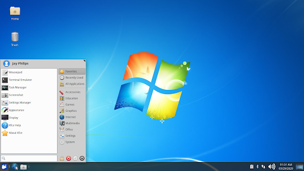
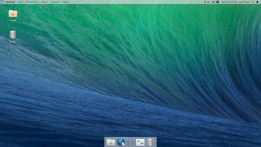
![[Nota]](../../libs-common/images/note.png)
|
|
|
Caso possua vários ecrãs, irão aparecer configurações adicionais do painel no separador Ecrã , incluindo as opções para definir em que ecrã o painel deve aparecer ou se deve abranger todos os monitores. |
O truque mais simples que pode fazer no  é personalizar os seus Favoritos, para que tenha um acesso fácil às suas aplicações mais importantes/utilizadas sempre que o abrir. Tem as opções de:
é personalizar os seus Favoritos, para que tenha um acesso fácil às suas aplicações mais importantes/utilizadas sempre que o abrir. Tem as opções de:
Adicionar uma aplicação se a localizar através da pesquisa pelo seu nome ou se navegar pelas categorias, efetuar clique com o botão direito do rato sobre ela e selecionar Adicionar aos favoritos a partir do menu de contexto.
Remover uma aplicação clicar sobre ela com o botão direito do rato nos Favoritos e selecionar Remover dos favoritos a partir do menu de contexto.
Reorganizar/reposicionar uma aplicação se clicar com o botão esquerdo do rato sobre ela nos Favoritos e arrasta-para a posição desejada.
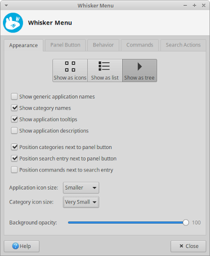
Para opções de personalização da aparência do , clique com o botão direito do rato no botão do menu e selecionePropriedadesno menu de contexto para executar as definições do Whisker Menu. Esta janela encontra-se dividida em separadores para:
, clique com o botão direito do rato no botão do menu e selecionePropriedadesno menu de contexto para executar as definições do Whisker Menu. Esta janela encontra-se dividida em separadores para:
Aparência - Contém opções para para definir o aspeto das categorias e das aplicações, bem como o posicionamento da lista de aplicações, lista de categoria, campo de pesquisa e botões de comandos.
Botão do painel - Selecione se pretende que o botão de menu seja um ícone, uma descrição em texto ou um ícone com descrição e qual a descrição a apresentar.
Comportamento - Defina o comportamento do Menu, incluindo se as categorias devem ser selecionadas quando o rato passar sobre elas, se o Menu deve permanecer aberto mesmo quando perde o foco, se a categoria Usadas recentemente deve ser apresentada por defeito e se os comandos de sessão devem ter janelas de confirmação.
Comandos - Ative ou desative a aparência do Gestor de definições e dos comandos de sessão na secção de botões de comandos, bem como a aparência da entrada Editar aplicações... no menu de contexto do botão do Menu.
Pesquisas direcionadas - Lista os vários padrões de palavras-chave que podem ser utilizados para melhorar a funcionalidade do campo de pesquisa e facilitar a pesquisa de outras fontes como a Wikipedia ou o sistema de ficheiros.
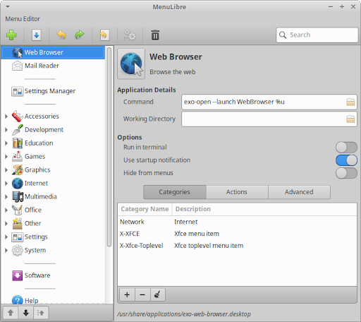
Para personalizar as aplicações que aparecem no  , abra o utilitário Editor de Menu, o qual também é acessível clicar com o botão direito do rato no botão do Menu e selecionar Editar aplicações a partir do menu de contexto. Através deste editor, é possível criar novos lançadores ou categorias de aplicações e editar os detalhes dos pré-existentes, incluindo a definição da categoria em que uma aplicação deve aparecer, se a mesma é visível no menu e o ícone ou nome utilizados pela aplicação.
, abra o utilitário Editor de Menu, o qual também é acessível clicar com o botão direito do rato no botão do Menu e selecionar Editar aplicações a partir do menu de contexto. Através deste editor, é possível criar novos lançadores ou categorias de aplicações e editar os detalhes dos pré-existentes, incluindo a definição da categoria em que uma aplicação deve aparecer, se a mesma é visível no menu e o ícone ou nome utilizados pela aplicação.
|
|
|
|
Para informações mais detalhadas sobre como utilizar todas estas opções, consulte a documentação online MenuLibre. |
O ambiente de trabalho fica visível assim que iniciar sessão na sua conta e o seu fundo também se encontra presente nos ecrãs de início de sessão e bloqueio do ecrã. Para aceder às opções de personalização, abra as definições do Ambiente de trabalho, as quais também podem ser acedidas se clicar com o botão direito do rato numa área vazia do ambiente de trabalho e selecionar Definições do ambiente de trabalho a partir do menu de contexto.
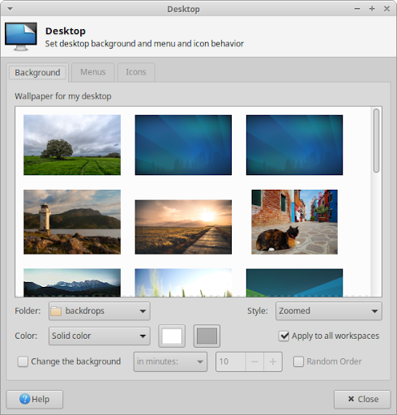
Assim que a janela de definições do Ambiente de trabalho abrir,o separador Fundo dar-lhe-á opções para escolher a imagem de fundo, um gradiente de cores, uma cor única ou uma combinação de papel(éis) de parece e cor(es) como fundo do ambiente de trabalho.
Pode selecionar uma imagem a partir da seleção predefinida que vem com o Xubuntu ou selecionar uma imagem de um diretório diferente através da alteração do valor da lista expansível Pasta . É possível definir como o papel de parede de vai adaptar ao ecrã na lista expansívelEstilo, O valor predefinido é Ampliado, o qual redimensiona a imagem, preservando a sua aparência e cortando-a para que se adapte ao ecrã. Caso possua vários monitores ligados , a lista expansível terá a entrada Abranger ecrã para que o papel de parede seja estendido a todos os ecrãs.
Caso existam várias imagens na lista de papéis de parede, tem também a opção de fazer o fundo alternar automaticamente entre elas de forma ordenada ou aleatórias. Caso ative a opção Mudar a imagem de fundo, poderá escolher uma de várias opções baseadas em intervalos de tempo. A última opção, Cronologicamente, faz com que os papéis de parede apareçam em determinados períodos do dia.
|
|
|
|
A seleção de fundos predefinida do Xubuntu inclui papéis de parede criados pela equipa do Xubuntu para diferentes lançamentos e papéis de parede submetidos pela comunidade. Para mais papéis de parede vencedores de concursos comunitários, procure pacotes que começam com xubuntu-community-wallpapers no gestor de pacotes Synaptic. |
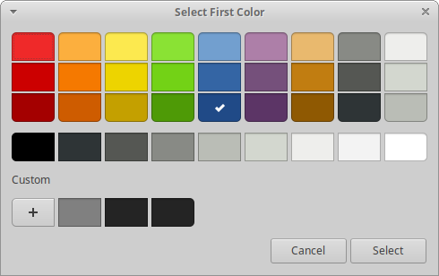
Para definir o fundo como uma cor única ou um gradiente de duas cores, defina o Estilo para 'Nenhum' e a Cor para a entrada apropriada. Em seguida, pode clicar no botões de cor junto à lista expansível para abrir a janela Selecionar a cor. Possui a opção de selecionar a partir da lista de cores apresentadas, clicar com o botão direito do rato numa cor predefinida para a personalizar ou criar uma cor totalmente nova se clicar no botão mais.
Caso possua várias áreas de trabalho, também conhecidas como ambientes de trabalho virtuais, pode escolher fazer aparecer o mesmo fundo em todas elas ou utilizar um diferente para cada área de trabalho. Para utilizar um fundo diferente, desative a opção Aplicar a todas as áreas de trabalho , arraste a janela para cada área de trabalho individualmente e selecione um fundo diferente. Isto pode ser feito se arrastar a janela através dos cantos esquerdo ou direito do ecrã ou através dos atalhos de teclado Ctrl + Alt + Home ou Ctrl + Alt +End. Também se aplica quando possui vários monitores ligados, onde cada ecrã possui um papel de parede predefinido, a menos que a janela seja arrastada para outros ecrãs e o fundo seja alterado.
|
|
|
|
A forma mais fácil de definir uma imagem como papel de parede é clicar com o botão direito do rato sobre ela na área de trabalho pretendida e selecionarDefinir como papel de parede do menu de contexto. |
No separador Ícones das definições do Ambiente de trabalho, pode definir as propriedades dos ícones que aparecem no ambiente de trabalho, incluindo os seus tamanhos, ordenação, tamanho do tipo de letra das descrições, comportamento a ter no clique, se devem possuir tooltips e miniaturas e que ícone do sistema são apresentados por defeito. A lista expansível Tipo de ícone oferece-lhe a opção de ter ícones do ambiente de trabalho para ficheiros e lançadores, janelas de aplicações minimizadas ou nenhum ícone.
O separador Menus das definições do Ambiente de trabalho oferece-lhe opções de personalização para os dois menus que podem aparecer quando utiliza o rato.
Menu do ambiente de trabalho- Este menu aparece quando clica com o botão direito do rato no ambiente de trabalho. Pode definir se possui ou não o numa hierarquia em árvore.
numa hierarquia em árvore.
Menu da lista de janelas - Este menu aparece quando clica com o botão central do rato no ambiente de trabalho. Pode escolher se apresenta ou não este menu bem como as opções de personalização para aplicações e áreas de trabalho dentro do mesmo.
Um tema do ambiente de trabalho é utilizado para alterara a aparência da interface gráfica do utilizador e pode consistir em diversas coisas, incluindo os fundos do ambiente de trabalho, os estilos e cores da interface gráfica, tipos de letra, ícones e sons. No Xubuntu, é possível alterar muitos destes componentes individuais para que o seu ambiente de trabalho se torne único.
Os três componentes principais de um tema que deve conhecer são:
- Esta é a aparência da secção exterior de uma janela, incluindo a barra de título e as bordas da janela. Também conhecida por tema do gestor de janelas.
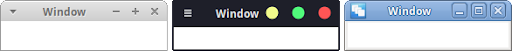
- Esta é a aparência dos elementos de interface gráfica do utilizador encontrados na secção interna da janela, tal com os botões, barras de deslocamento e fundo da janela. Também conhecido como tema Gtk.
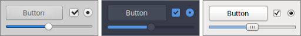
- Este é o conjunto utilizado para estilizar os ícones das barras de ferramentas e dos menus, nos ficheiros e diretórios, nos lançadores das aplicações e nos botões. Também conhecido como tema de ícones.
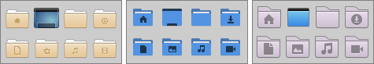
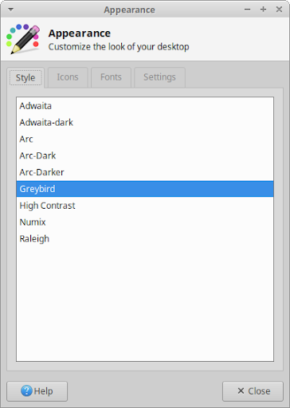
Assim que abrir as definições de Aparência será colocado no separador Estilo, o qual lhe permite definir o seu tema de Controlos de interface gráfica através da seleção de uma entrada da lista. Se trocar para o separador Ícones poderá definir o seu tema de ícones através da seleção de uma entrada da lista. O separador Tipo de letra permite-lhe definir o tipo de letra predefinido utilizado nos textos da interface gráfica, bem como nas opções de renderização das definições dos tipos de letra. O separador Definições possui opções para ativar ou desativar imagens nos menus e nos botões, bem como alterar a forma como as entradas da barra de ferramentas são apresentadas.
|
|
|
|
Nem todos os temas de ícones irão funcionar corretamente em painéis e fundos de janela escuros. Caso instale aplicações que utilizem o Kit de ferramentas de interface gráfica do Qt, tal como o Qbittorrent ou o Clementine, o utilitário de definições do Qt5( Caso pretenda alterar o tema do cursor do rato, abra o separadorTema das definições do Rato e painel de toque. |
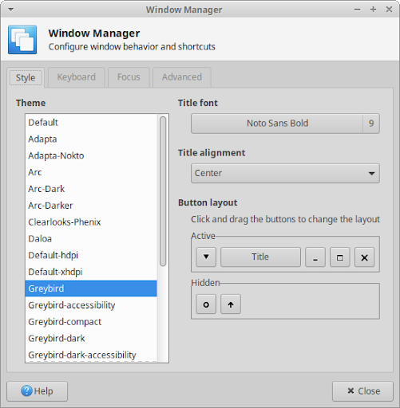
Assim que abrir as definições do Gestor de janelas, será colocado no separador Estilo, o qual lhe permite definir o tema de decorações de janelas, bem como personalizar vários elementos da barra de título. Isto inclui o alinhamento e o tipo de letra utilizado no texto da barra de título e a organização e visibilidade dos botões da barra de título.
O Xubuntu não vem com muitos efeitos do ambiente de trabalho, mas o compositor do Xfce encontra-se ativo por defeito. O compositor do Xfce é utilizado para desenhar sombras atrás das janelas e dos painéis bem como definir a transparência das decorações das janelas e das janelas em vários estados. Para aceder a estes efeitos do ambiente de trabalho, abra a janela de definições Ajustes do gestor de janelas no separadorCompositor.
|
|
|
|
Caso possua uma GPU de gama baixa ou não pretenda utilizar efeitos de ambiente mencionados anteriormente, pode desligar o compositor se desativar a opção Ligar composição de ecrã ou modificar as outras configurações. |
Caso a seleção de temas predefinida não o satisfaça, pode instalar e transferir novos temas facilmente. Por vezes, os temas de decorações de janelas e de controlos de interface gráfica são empacotados em conjunto como um único tema Gtk, enquanto os temas de ícones também podem incluir um tema de cursor para o rato. Pode encontrar novos temas em repositórios de software, tais como:
Temas de interface (UI) - Adapta ( adapta-gtk-theme
adapta-gtk-theme arc-theme
arc-theme materia-gtk-theme
materia-gtk-theme
Temas de ícones - Papirus ( papirus-icon-theme
papirus-icon-theme numix-icon-theme-circle
numix-icon-theme-circle moka-icon-theme
moka-icon-theme
Podem ser encontrados temas adicionais na internet, sob a forma de ficheiros de pacotes Debian  .deb
.deb
Temas de interface (UI)- Xfce Simple Dark, Mint Mac Dark, Matcha, Plano, Pop, Flat Remix, Dracula
Temas de ícones - Flat Remix, Paper
Caso instale novos temas a partir de repositórios ou través de um ficheiro de pacote Debian .deb
.deb
- Com o ecrã de definições de Aparência nos separadores Estilo ou Ícones pode arrastar e largar um ficheiro de tema comprimido .tar.xz na lista de temas.
- Caso esteja a instalar temas do Xfce-look.org, pode instalar o assistente de instalação ocs-url e clicar nos botões 'Instalar' da coluna OCS-Install do separador Ficheiros da página do tema.
- Abra o ficheiro de interface ou de ícones comprimido e extraia o seu conteúdo para o diretório apropriado. Caso estes diretórios não existam, terá necessidade de os criar primeiro.
Temas de UI (Interface) -  /home/username/.themes/
/home/username/.themes/
Temas de ícones -  /home/username/.icons/
/home/username/.icons/
|
|
|
|
A parte do caminho do diretório deve ser substituída pelo seu nome de utilizador. No Linux, os ficheiros e diretórios que começam com um ponto encontram-se ocultos por defeito e para os mostrar no gestor de ficheiros. abra o menuVer e selecione a entradaMostrar ficheiros ocultos ou utilize o atalho de teclado Ctrl + H. Para os apresentar nas caixas de diálogo de abrir e guardar, clique com o botão direito do rato na área de lista de ficheiros da janela e selecione Mostrar ficheiros ocultos do menu pop-up. |
 |
 |
|
| Capítulo 5. Gestão de software |

|
Capítulo 7. Definições - Hardware |